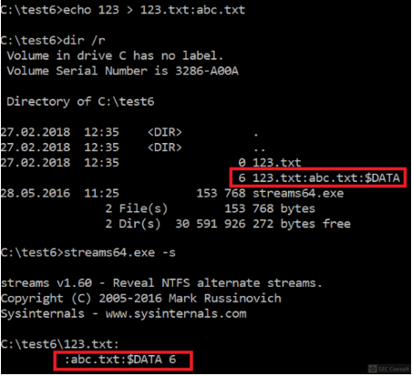

As already discussed it’s possible to dump ADS via the /r switch in the dir command. Moreover, streams.exe is a tool from Sysinternals which can also dump the streams:

On older versions of Windows it was possible to hide the ADS by using reserved names as base name (e.g.: CON, NUL, COM1, COM2, LPT1, …). However, on Windows 10 this seems to be fixed and is no longer possible, but “…” still works:

The ADS on “…” was successfully created, but isn’t listed by the tools. Creating an ADS on COM1 results in an error, the creation of an ADS on NUL doesn’t have any affect (ADS will not be created).
Please note that you can also create an ADS on the drive like “echo 123 > C:\:abc.txt”. This will hide from the “dir /r” command inside C:\. However, it will show the ADS inside subfolders of C:\ for the “..” directory. For example:

The red marked ADS was created by the C:\:abc.txt ADS. This ADS is also visible via Sysinternals tool streams.exe if it’s called directly on C:\. Therefore, to hide from both tools the “…” trick should be used.